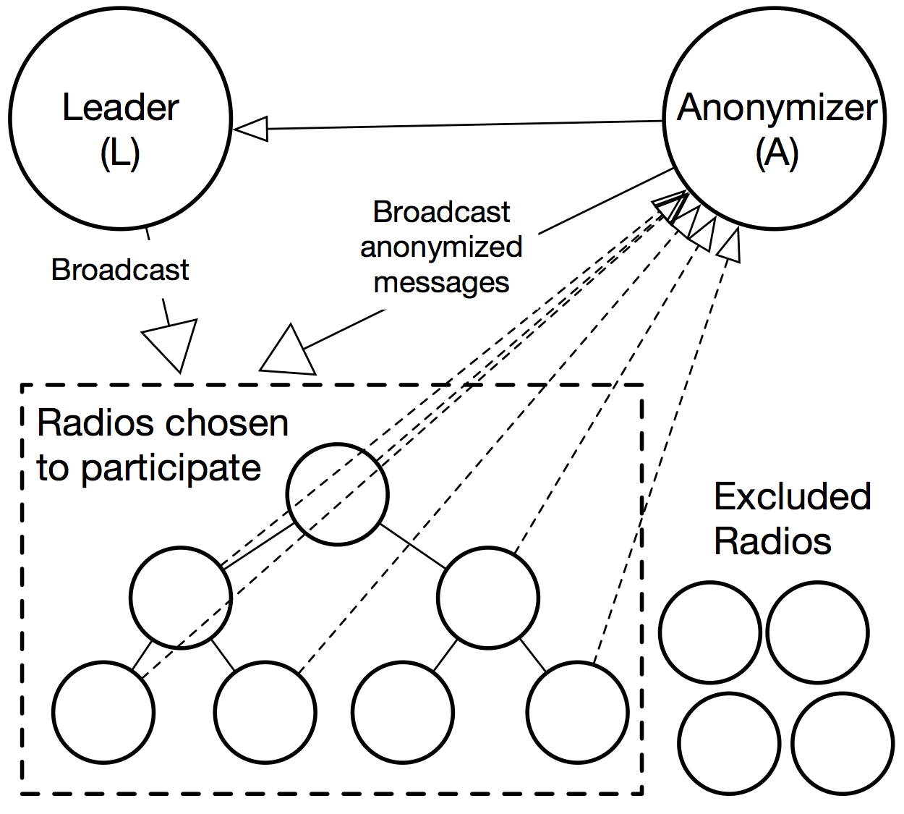
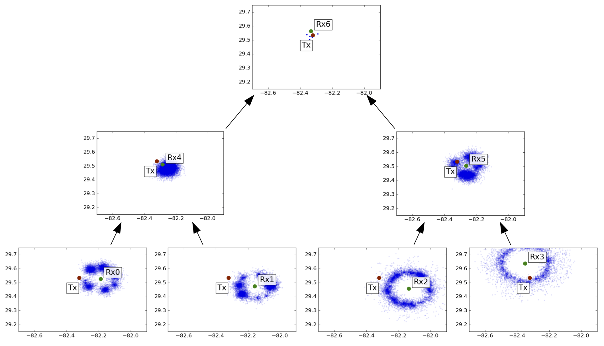
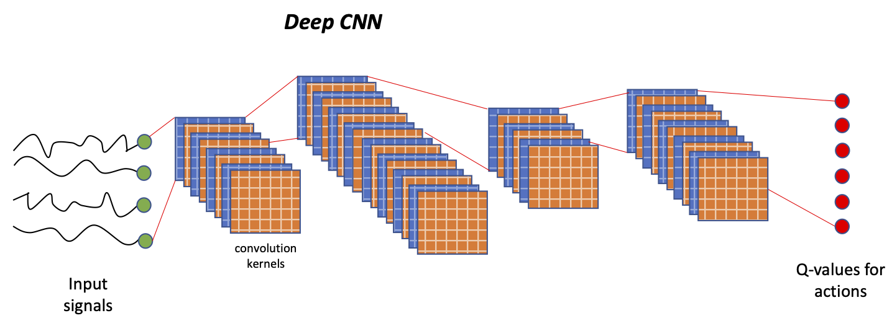
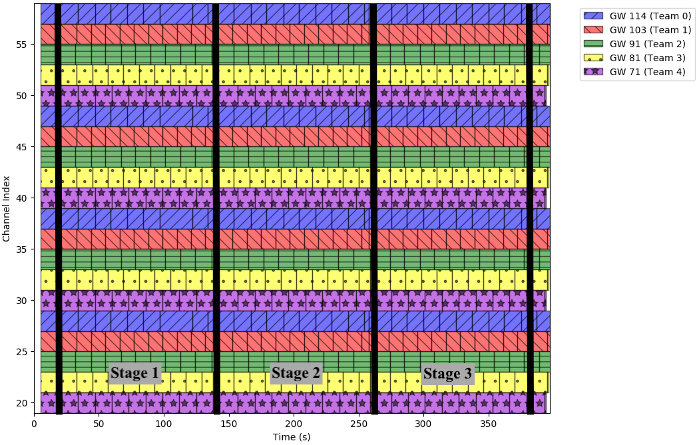
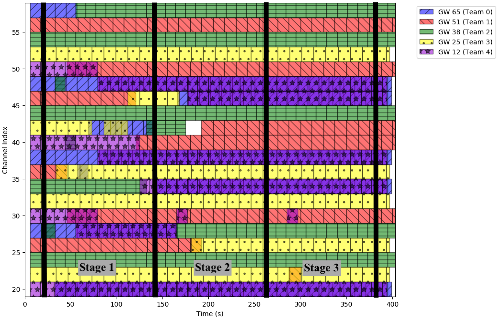

NSF Award Number 1642973
Sponsored by the NSF Division of Computer and Network Systems (CNS)
Investigators: John M. Shea (PI), Patrick Traynor (Co-PI), and Tan F. Wong (Co-PI)
Recent rapid advances in dynamic spectrum access (DSA) highlight the philosophical shift in both technology development and policy making of radio spectrum management. The driving force behind this shift is the commonly accepted belief that the radio spectrum, as a scarce public resource, can be utilized more efficiently and fairly by the partnership of smarter management and looser regulations. This in turn will lead to democratization of the radio spectrum to people of wider socioeconomic strata, as well as to a much larger variety of present and future communication needs and services. This work seeks to assist in the democratization of such spectrum through:
developing techniques for spectrum mapping to protect against internal and external attacks, and evaluating the tradeoffs between privacy protection and accuracy of the spectrum map,
implementing the privacy-preserving spectrum mapping techniques using software-defined radios and Andriod phones,
implementing our privacy-preserving spectrum mapping techniques using a Computing Agent/Spectrum Application Server/Spectrum Usage Database framework, run on a commercially available cloud-computing service, and
conducting an outreach class on radio and dynamic spectrum access at the Cade Museum for Science+Innovation
We are developing novel techniques to protect the privacy of users involved in sensing the radio spectrum as part of a DSA system. The techniques we propose are built on top of secure computing primitives, such as anonymyizing proxies, public-key encryption, and garbled circuits, which uses cryptographic techniques to allow users to compute a result without any of the parties being able to know the other parties' inputs to the computation. Although complete privacy is not possible in a spectrum sensing system, we are developing systems that achieve k-anonymity in the presence of adversaries with various capabilities. In k-anonymity, a user's location and capabilities may only be reduced to one of k possibilities. A significant challenge in developing such techniques is that many secure computing primitives require high computational complexity, and thus cannot be implemented on many DSA devices, such as future generations of cellular phones. Thus, we are developing privacy-preserving spectrum sensing techniques that have sufficiently low complexity to be implemented on such devices.
Our research has resulted in techniques for privacy-preserving localization techniques in distributed networks, analysis techniques for time-varying networks, and techniques to protect networks from jamming attacks. Our work has been reported in three published conference papers (journal articles are in progress):

Roles of radios in a distributed network and interations during
privacy-preserving localization protocol

Localization is performed using a distributed particle-filter algorithm that fuses information from different radios from the leaves to the root of a binary tree
In "An Adjacency Matrix Approach to Delay Analysis in Temporal Networks" (IEEE MILCOM 2017), we develop analytical techniques to model the flow of information across a temporal network, which is a graph with time-varying edges. Temporal networks can be used to model mobile wireless networks with time-varying links, and these techniques may be used to analyze the flow of private information in such networks.
In "Positioning Helper Nodes to Improve Robustness of Wireless Mesh Networks to Jamming Attacks" (IEEE GlobeCom 2017), we develop techniques to enhance the robustness of wireless networks to jamming attacks, which can be used to disrupt spectrum-sensing processes.
In "Optimal Jammer Placement in the Real Plane to Partition a Wireless Network" (IEEE WCNC 2019), we develop new algorithms to find minimum cardinality jammer placements to partition a wireless network. Prior to this paper, optimal solutions were only available when the placement of jammers was constrained to the locations of the communication nodes. The algorithms in this paper solve a type of disk cover problem in which the objective is not to cover all of the communication nodes but instead only to cover a subset required to achieve a network partition goal. This same approach may be useful for other purposes in communication networks, such as the placement of aerial routers to enhance the robustness of the network topology. A variation on this algorithm may be useful for network clustering. For instance, in the context of distributed RF localization, such a clustering can be used to enable sets of nearby sensing agents to either fuse their measurements, elect a single representative to carry out measurements, or alternate among the agents to provide measurements and carry out distribute computations.
In “A Hybrid Approach to Secure Function Evaluation using SGX” (ACM Asia CCS 2019), we develop techniques for two-party secure function evaluation (2P-SFE) that allows a designer to partition parts of the protocol that are evaluated inside a secure enclave and those parts that are implemented via standard cryptographic techniques. This approach allows increased performance while providing protections against side-channel attacks on the secure enclave. We can leverage this approach to reduce the cryptographic overhead of privacy-preserving localization and mapping.
In "Reinforcement Learning for Mixed Cooperative/Competitive Dynamic Spectrum Access" (DySPAN 2019), we report on two appoaches to dynamic spectrum sharing using spectrum sensing and mapping techniques developed under this grant. We compare the performance of a strategy learned via reinforcement learning versus a human-tuned "expert system" strategy. The results show similar performance for the two strategies for the scenario investigated, with the expert system performing slightly better overall. This paper provides some high-level overview of our use of spectrum sensing and mapping, as well as our decision making processes, used in the DARPA Spectrum Collaboration Challenge.
In “Identifying bottleneck nodes using packet delay statistics” (MILCOM 2019), we investigate methods for identifying single bottlenecks in communication networks when only round-trip delay statistics are available.
One of the goals of this project is to investigate how we can leverage cloud computing in privacy-preserving spectrum sensing. Our move to leverage secure enclaves has complicated this because most cloud operators do not provide secure enclaves as part of their service because of various technical challenges that it presents. In “A Practical Intel SGX Setting for Linux Containers in the Cloud” (ACM CODASPY 2019), we develop an lxc-based container system that allows Intel SGX (secure enclave) applications to run inside a container in the cloud, while providing all the critical features of SGX, such as remote attestation. We demonstrate that up to 100 containerized SGX applications can be run with reasonable overhead in our system.
In “A Deep Q-Learning Dynamic Spectrum Sharing Experiment” (IEEE ICC 2021), we report results on applying deep Q-learning for optimizing spectrum sharing among a group of homegeneous networks, where each network makes decisions on how much spectrum to use and which frequencies to transmit on. In particular, we demonstrate that deep Q-learning is able to identify and take advantage of spatial reuse opportunities. All results for the paper are based on experiments carried out in Colosseum and leverage our spectrum mapping and occupancy measurements in making channel assignment decisions.
A conceptual image of our deep Q-network's structure is shown below. We also include visualizations of each team's frequency use over time for two different strategies. The fair-use strategy assigns each of the 5 teams and equal share of the spectrum resources. The deep Q-learning stratey uses a convolutional neural network with three hidden layers (and 4 convolution kernels) to optimize spectrum usage via machine learning. In both cases, the strategies choose the number of channels to use, and identical processes using spectrum mapping and occupancy information are used to determine the particular channels each network uses. The deep Q-network was able to score approximately 48% higher than the fair share assignment over multiple runs in the Alleys of Austin scenario in Colosseum.

Deep convolutional network trained to perform Q-learning for optimizing the number of channels used by a network of radios in the Alleys of Austin scenario in Colosseum

Spectrum usage for five teams in the Alleys of Austin scenario with a fair-share criterion, in which each team uses 1/5 of the available spectrum.

Spectrum usage for five teams in the Alleys of Austin scenario with spectrum usage for each team decided by a deep Q network. Spectrum use varies across team, and significant spatial reuse is observed between teams 0 and 4. An improvement in match score of approximately 48% was observed in comparison to the fair-share assignment.